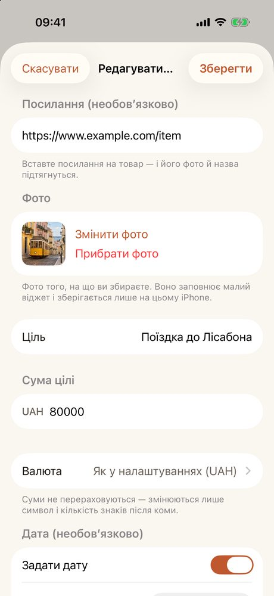
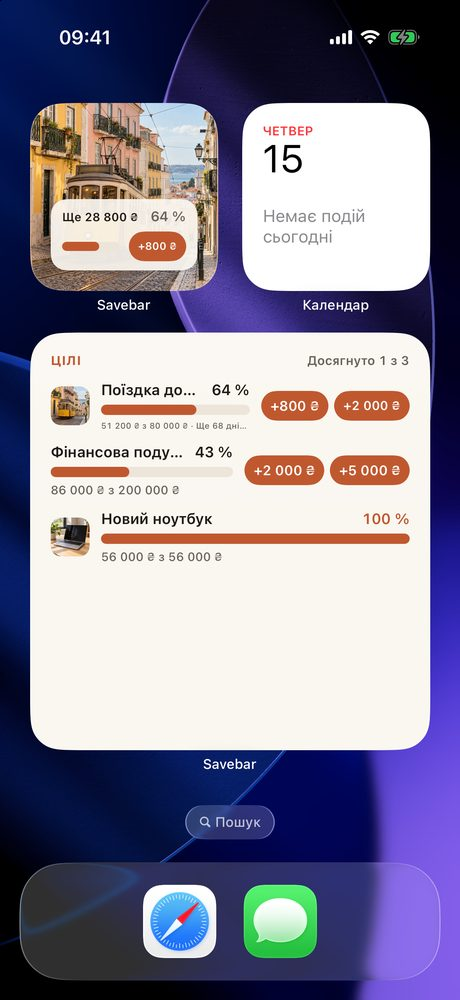

Як додати ціль заощаджень на Початковий екран iPhone
Збирати на щось легше, коли це видно. Віджет розміщує смугу — скільки вже зібрано і скільки лишилося — там, куди ви дивитеся багато разів на день, і дає змогу додати суму одним дотиком.
Ось як налаштувати це в Savebar. Одна ціль і малий віджет — безкоштовно.
1. Створіть ціль
Відкрийте Savebar і торкніться +.
Введіть назву та Сума цілі.
Необов’язково: увімкніть «Задати дату» — так ви бачитимете, скільки днів лишилося і скільки відкладати щодня.
Необов’язково: вставте посилання на товар у поле «Посилання». Фото й назва підтягнуться зі сторінки.
2. Виберіть суму для кнопки віджета
У полі «Суми для віджета» введіть суму, яку зазвичай відкладаєте. Кнопка віджета додає її одним дотиком, не відкриваючи застосунок.

3. Додайте віджет на Початковий екран
Торкніться й утримуйте порожнє місце на Початковому екрані, доки програми не почнуть тремтіти.
Торкніться «Редагувати» (або +) у верхньому куті, потім знайдіть «Savebar».
Виберіть розмір Малий і торкніться «Додати віджет».
Щоразу, коли відкладаєте гроші, торкайтеся кнопки суми на віджеті. Смуга й відсоток змінюються одразу там.

Більший віджет на цьому знімку, з кількома цілями, входить у Savebar Pro.
Хочете більше?
Savebar Pro — це разова покупка, а не підписка:
Необмежена кількість цілей
Середні й великі віджети з кількома цілями та до двох кнопок суми на кожну ціль
Віджети для Замкненого екрана
Застосунок для Apple Watch із такими самими кнопками суми
Запитання
Чи підключається застосунок до мого банку?Ні. Ви додаєте суми самі, тож не потрібно ні входити в акаунт, ні щось під’єднувати.
Скільки цілей можна створити безкоштовно?Одну, з малим віджетом на Початковому екрані. Savebar Pro — разова покупка — дає необмежену кількість цілей, середні й великі віджети з кількома цілями, віджети для Замкненого екрана та застосунок для Apple Watch.
Чи можна додати суму, якої немає на кнопці?Так. Відкрийте ціль у застосунку й торкніться «+ Додати», щоб ввести будь-яку суму.
Як вибрати, яку ціль показує віджет?Торкніться й утримуйте віджет, торкніться «Редагувати віджет» і виберіть ціль.